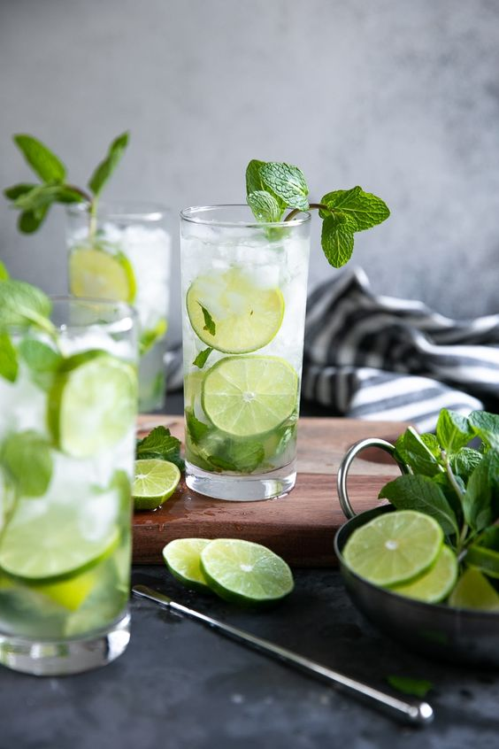

RECEPT VOOR DE LEKKERSTE MOJITO
Stappen voor een heerlijke Moijto

Benodigheden voor Mojito
- Een groot glas bruiswater
- 2 of 3 ijsblokjes
- Verse munt
- Een scheutje Bacardi
- Sap van een halve limoen
- 1/2 lepel rietsuiker
Hoe doorloop ik deze stappen?
- Gebruik voor deze cocktail een stevig glas met stevige onderkant om in te muddlen (stampen). Je moet namelijk goed muddlen om alle smaken te mengen, belangrijk dat je hier een goed glas voor hebt.
Zet ook al vast een vol glas met crushed ice klaar.
- Begin eerst met 3 barlepels rietsuiker en de limoenpartjes (in kwartjes) in het glas te doen.
- Nu pak je de muntblaadjes. Voor je deze in het glas doet sla je deze in de palm van je hand. Je ruikt meteen het aroma dat vrij komt.
- Hierna neem je 4-5 muntblaadjes die je in het glas doet. Smeer ook de rand van je glas in met munt zodat je ook hier extra muntsmaak krijgt.
- Voeg nu naar smaak witte rum toe. Ca 30 tot 45 ml met een barmaatje.
- Voeg crushed ice toe en nu roer je met je barlepel alles door elkaar zodat het goed mengt. Let erop dat de limoentjes en de munt mooi zweven in je glas en niet onderin blijven liggen.
- Top nu de cocktail af met bruiswater. Eventueel kun je ook nog 1 a 2 dashes (druppels) angostura bitters toevoegen.
- Glas afwerken met extra crushed ice
- Zet de kroon op het werk: garneer met een kroontje munt.
- Hij is nu klaar. Zet een lekker zomers muziekje op en geniet van je zelfgemaakte Mojito!
Geniet ervan!